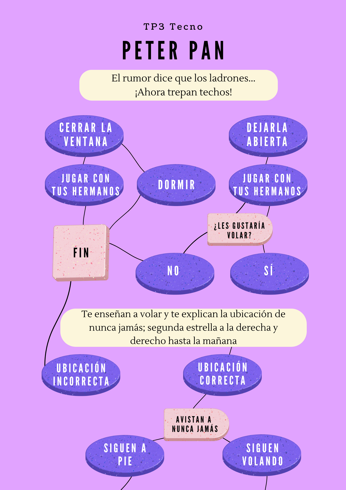
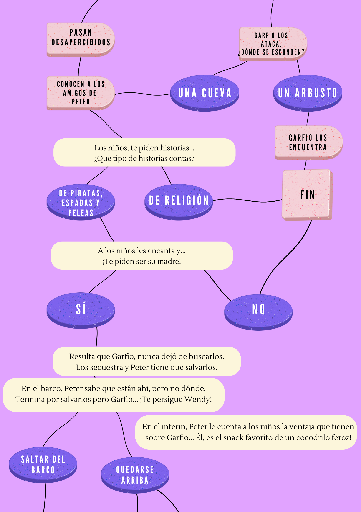
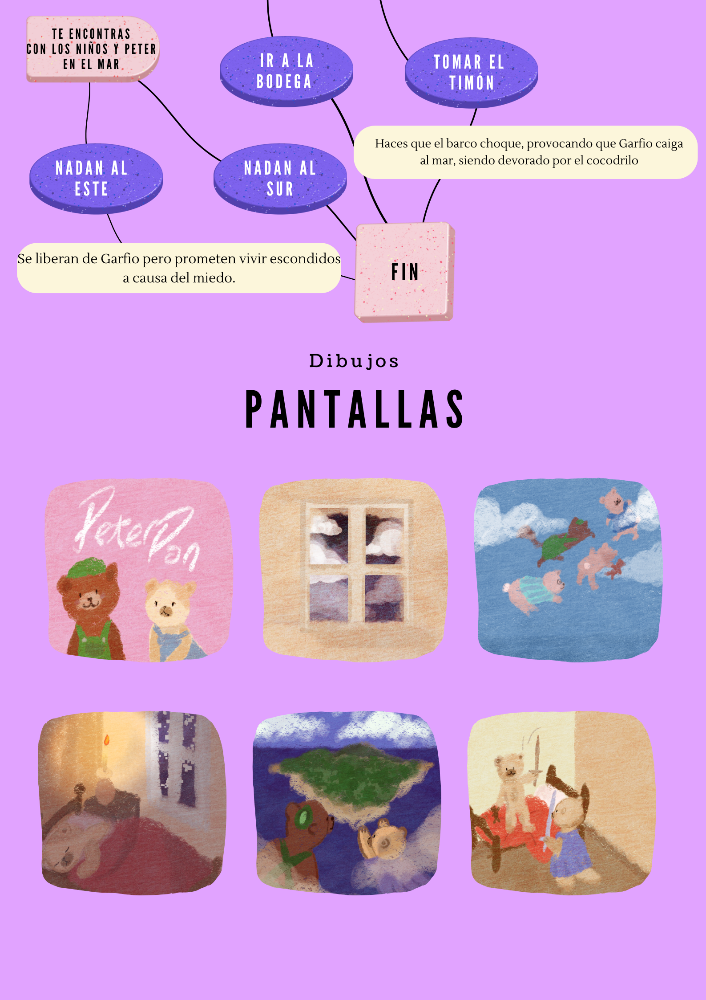
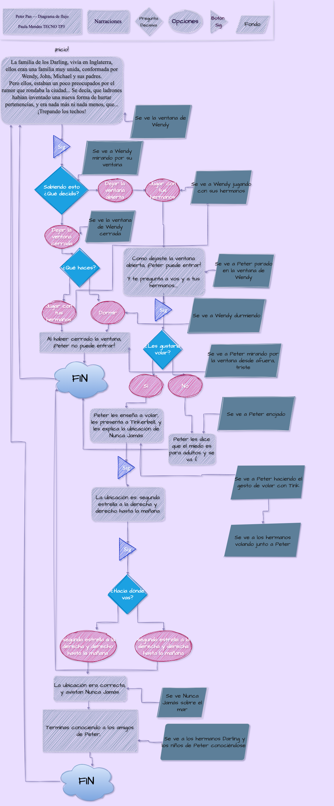

Trabajo Final: Peter Pan
Sobre mí
¡Hola! Me llamo Paula Mendes y soy alumna de la comisión número 3 de tecnología multimedial en la carrera de diseño multimedial. Tengo 19 años y me apasiona la creatividad en todas sus formas.
Bocetaje del Proyecto
Desde el principio supe que quería trabajar en el trabajo N3 con la historia de 'Peter Pan'. En el TP3, intenté generar imágenes con IA, pero siempre tenían algo desconcertante, así que decidí dibujarlas yo misma. ¡Y para hacerlo aún más único, convertí a los personajes en osos y gatos!

Esta fue la idea inicial de cómo quería que funcionara el juego:

Proceso de Dibujos
Aunque presentaba un desafío, logré llevar a cabo el proceso de dibujos. Originalmente, la historia tendría más de 60 páginas, pero decidí reducirla por mi bienestar.


El primer diagrama de flujo se veía así, pero después de algunas correcciones, terminó viéndose así:
   